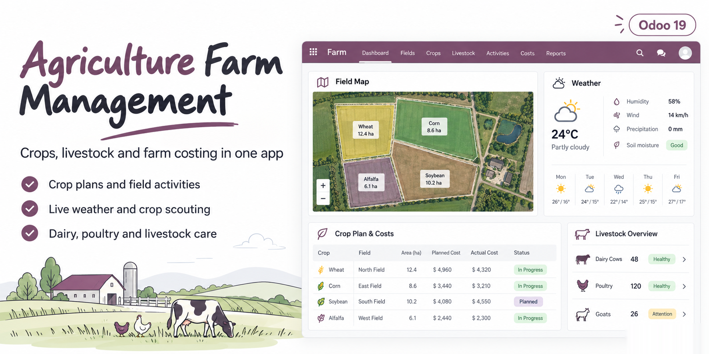
Agriculture management in one module: farms and fields on a map, crop planning per season, field activities that use real stock, labour and machinery, a farm job cost sheet with budget vs actual and cost per hectare, crop scouting, farm weather records from Open-Meteo with frost and rain alerts, harvest lots sold through Sales, livestock management for dairy farm, poultry farm, goats and sheep, and a contract farming crop request portal.
One app for the field, the barn and the office
Crop farms and plantations Plan every field each season, record the work as it happens and see what each crop really cost per hectare. | Dairy, poultry and mixed farms Animals, breeding, milk, eggs, feed and vet care in the same app as the fields that grow the feed. | Agribusiness and contract farming Take crop requests from buyers and growers online, plan them on your land or buy from contract growers. |
Everything below was used on a test database with sample data
Farms and fields on a map Draw each field boundary on OpenStreetMap: the area in hectares and acres is measured for you. The farm map shows every field coloured by status with its crop. No API key. | Soil data Soil type, pH, organic matter, N, P, K and EC per field, with a soil test history and the lab report attached. The latest test becomes the field soil profile. | Crops, varieties and seasons Crop master with days to harvest, expected yield, GDD base temperature, varieties with their own yield and seed rate, and an activity template per crop. |
Crop plans per season and field Pick field, season, crop and variety: harvest date and expected yield are computed. Confirming creates the field activities and the budget. Overlapping plans on a field are blocked; draft plans stay as scenarios. | Field activities that use stock Land preparation, sowing, irrigation, fertiliser, spraying, weeding and harvest take seed, fertiliser and chemicals out of the farm stock location with real stock moves. Undo returns the stock. | Labour and machinery hours Log hours per employee (Employees app, hourly cost) and per machine (Maintenance equipment, cost per hour). Engine hours open a preventive maintenance request when a service is due. |
Farm job cost sheet Budget vs actual per crop plan for materials, labour, machinery and overhead, plus vendor bills booked on the plan analytic account. Cost per hectare, cost per unit of yield, revenue and margin. PDF job cost sheet. | Crop scouting Pests, diseases and weeds with photos, severity, plants affected and affected area. The recommended treatment is scaled to the area and becomes a spraying activity in one click. High severity alerts the responsible. | Farm weather records Daily weather per farm filled from Open-Meteo (keyless): min, max and mean temperature, rain, humidity, wind, gusts, ET0, plus a forecast. History loader for past months. GDD and rain since sowing on every crop plan. |
Frost and heavy rain alerts Thresholds for frost, heavy rain, heat and strong wind in the settings. Today and forecast alerts are posted on the farm and given to the farm manager as a warning activity. | Harvest lots and sales Each harvest becomes a stock lot with field, season, quality grade and moisture. Sell lots from a wizard priced by grade: the sales order delivery is reserved from that exact lot. | Crop yield analysis Yield per hectare, harvested quantity and cost by crop, field and season in pivot and graph views, plus a budget vs actual report and a crop calendar. |
Livestock and herds Dairy cattle, beef, goats and sheep as individual animals with ear tag, RFID, breed, dam and sire, weights and daily gain. Poultry flocks and batches counted by head with placement date and age in weeks. | Breeding and calving Natural service, artificial insemination or embryo transfer, semen straws taken from stock, pregnancy check and expected birth date from the species gestation. Register the birth: calves are created with dam and sire. | Vet treatments and vaccination Treatments with medicines from stock, vet fee and one-click vendor bill. Vaccination schedules per species plan the next doses for animals and flocks. Withdrawal periods flag the milk to discard. |
Milk yield and egg production Milk per animal per session with fat, protein and SCC; tank milk received into stock. Eggs per flock per day with broken eggs and lay rate; saleable eggs received into stock. | Feed and mortality Daily ration per head times the head count, consumed from stock in one click with feed cost per herd and feed per litre of milk. Mortality by cause updates the head count. | Contract farming crop request portal Customers and partner farmers send crop requests from the website or their portal account and follow them there. Turn a request into a crop plan, a quotation or a purchase order for a contract grower. |
What usually needs five to nine separate agriculture apps
| Need | This module | Typical separate apps |
|---|---|---|
| Fields mapped with measured area | Yes, OpenStreetMap, no key | Location name only |
| Activities consume real stock | Yes, stock moves from the farm location | Material lists or separate requisition app |
| Job cost sheet budget vs actual | Included, live from activities and bills | Separate paid job costing app |
| Weather records | Filled daily from Open-Meteo with alerts | Typed in by hand, separate paid app |
| Crop scouting to spraying | One click, quantity scaled to area | Separate paid app, record only |
| Harvest lot reserved on the sale | Yes | Not advertised |
| Dairy, poultry, goats and sheep | Included | Separate dairy and poultry apps |
| Crop request portal | Included, website and portal | Separate paid app |
Real screens from Odoo 19 with the sample farm Northwind Farms
Farm dashboard: area under crop, season cost against budget, open scouting, milk and eggs, field work and weather alerts.
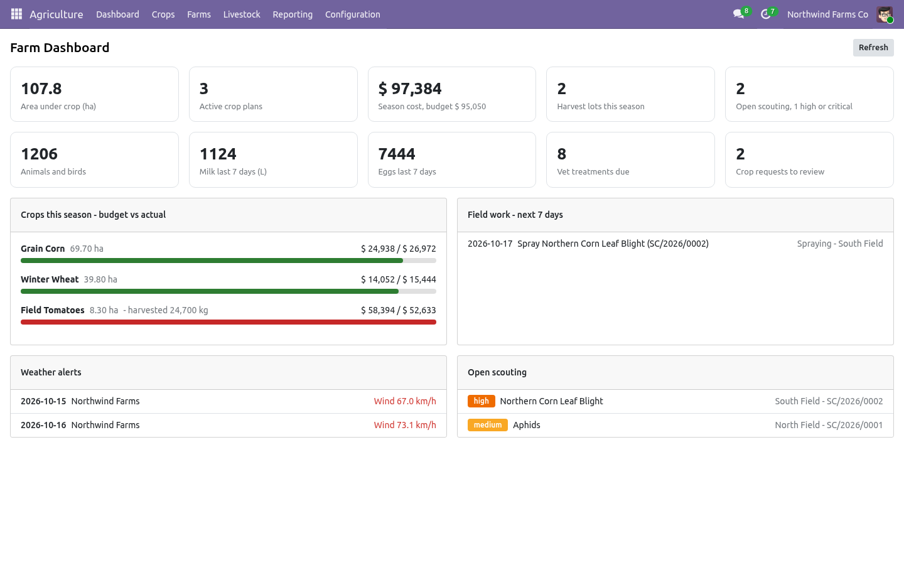
The farm with all fields drawn on OpenStreetMap, coloured by status, and the weather alerts in the chatter.
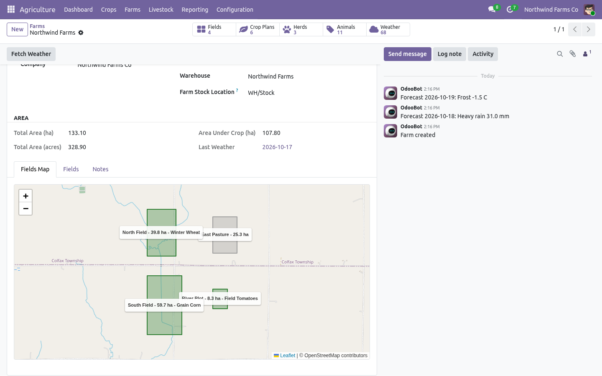
A field: click the map to draw the boundary, the area is measured in hectares and acres.
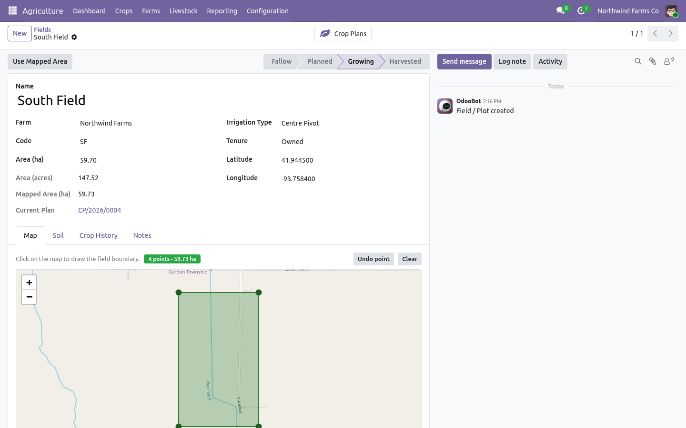
Crop plan with growing degree days, rain since sowing and the job cost sheet: budget vs actual, cost per hectare, yield and margin.
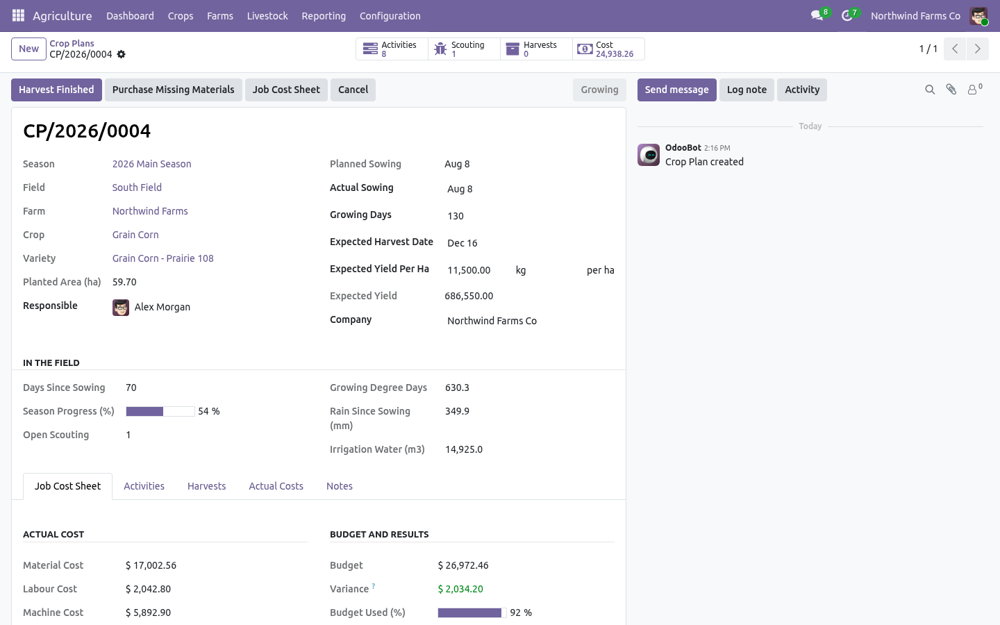
A done fertiliser activity: product taken from stock, labour hours and tractor hours costed.
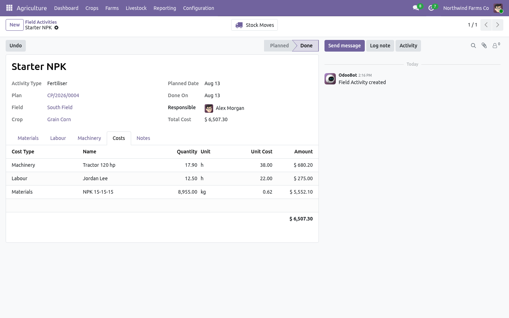
Crop scouting with photos, severity, affected area and the weather of the day.
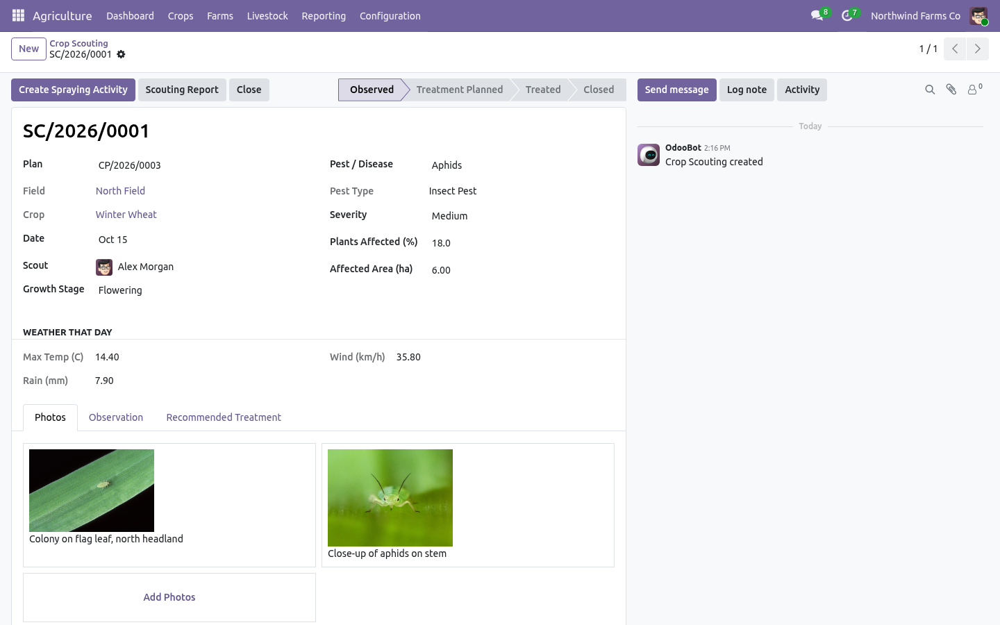
Weather log filled from Open-Meteo with forecast days and frost / heavy rain alerts.
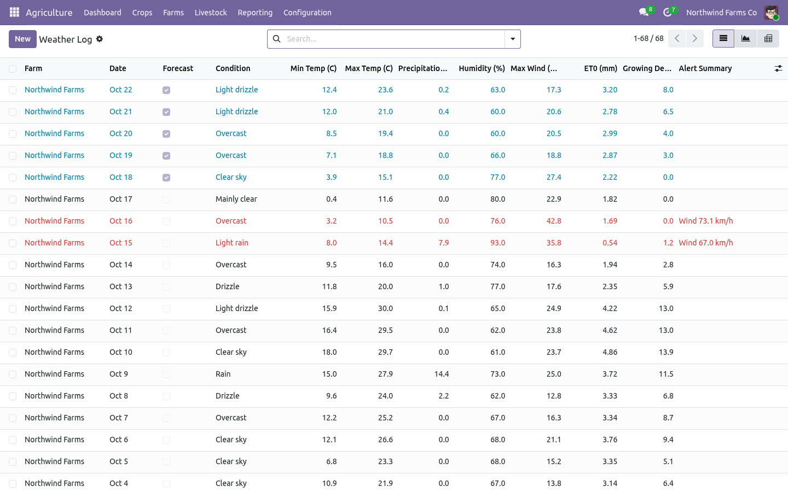
A harvest received into stock as a lot with quality grade, yield per hectare and the sold quantity.
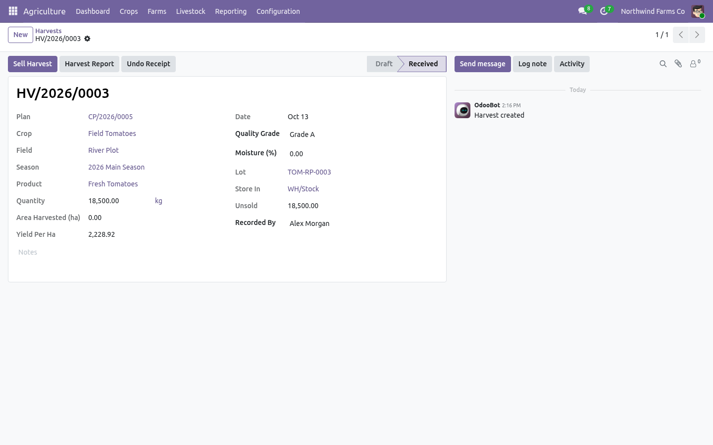
Dairy herd: milk per head per day, feed per litre, feed and vet cost, daily ration from stock.
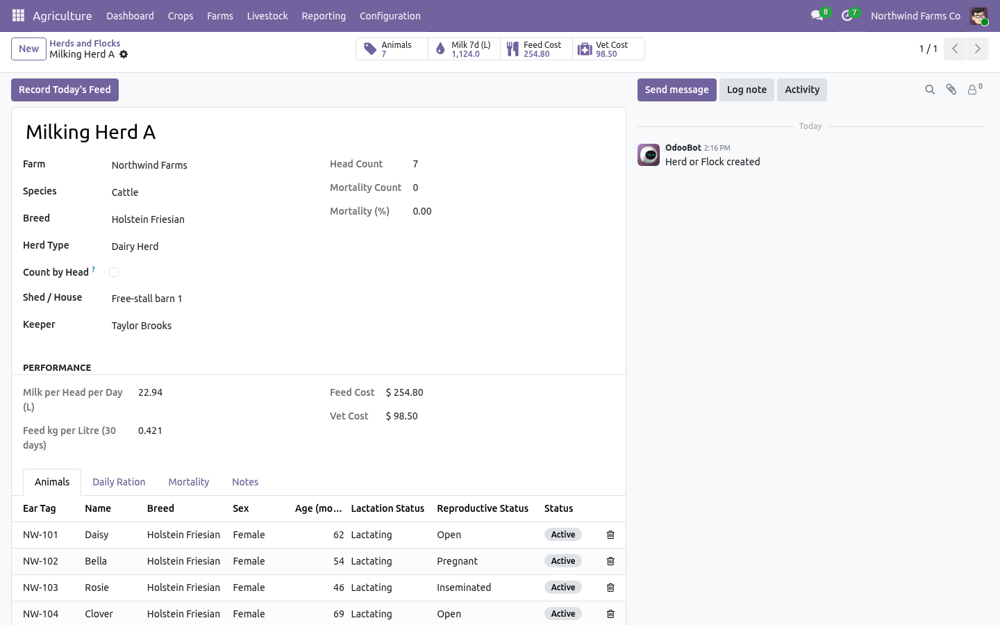
A cow under treatment: the withdrawal period is shown and her milk is discarded automatically.
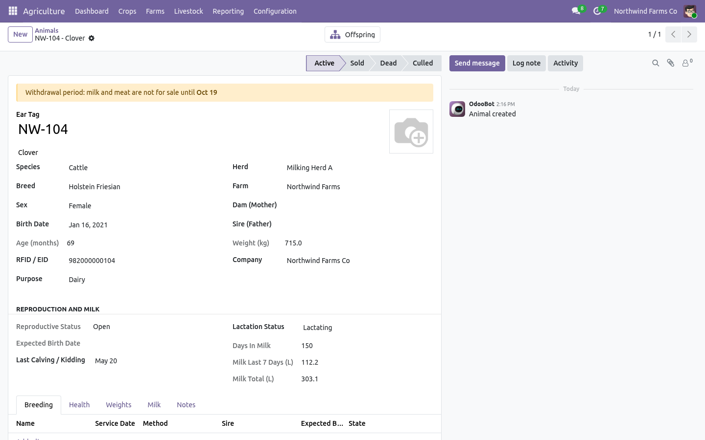
Egg production of the layer flock.
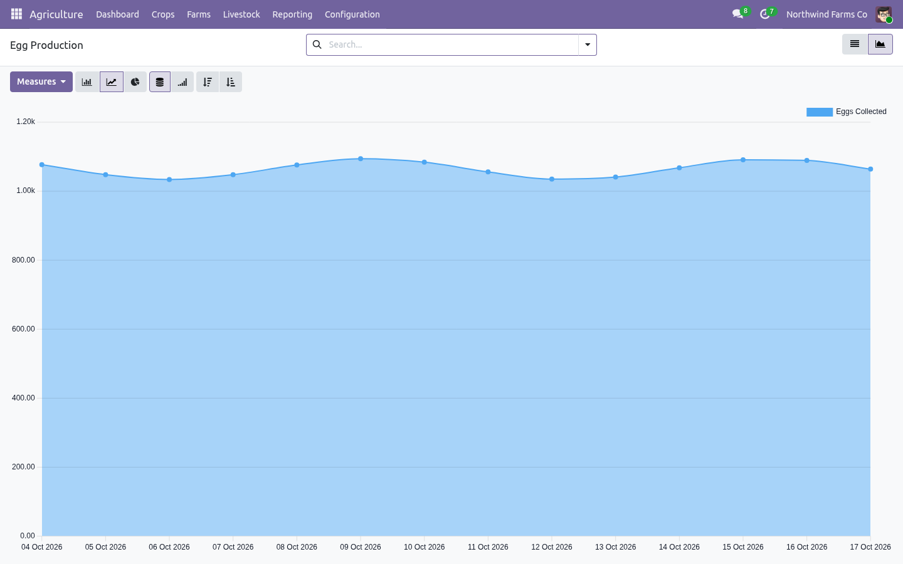
A contract grower request received from the portal, ready to become a purchase order.
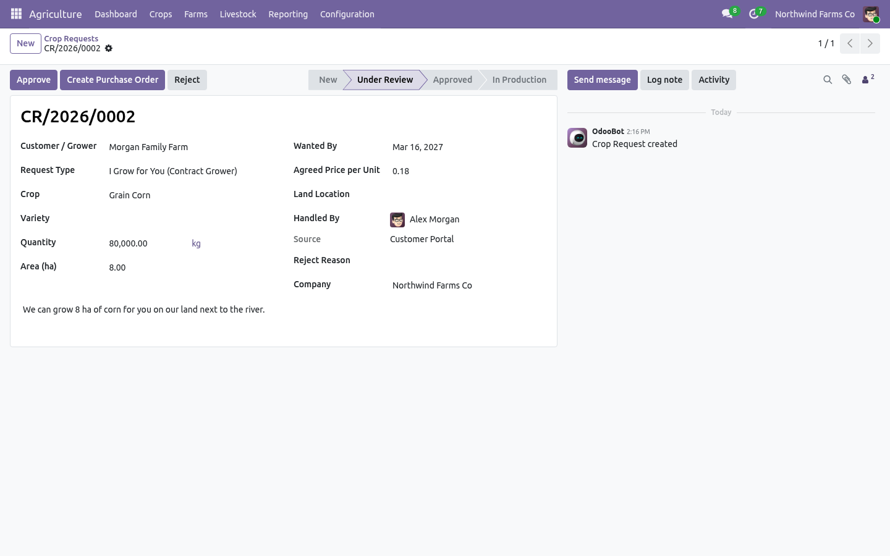
The customer portal: a partner farmer follows his crop requests.
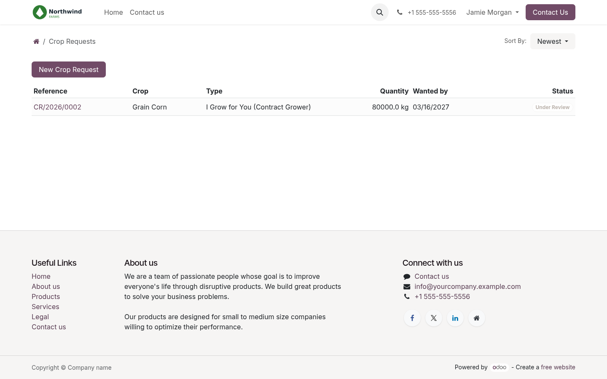
The public website form: anyone can request a crop, no account needed.
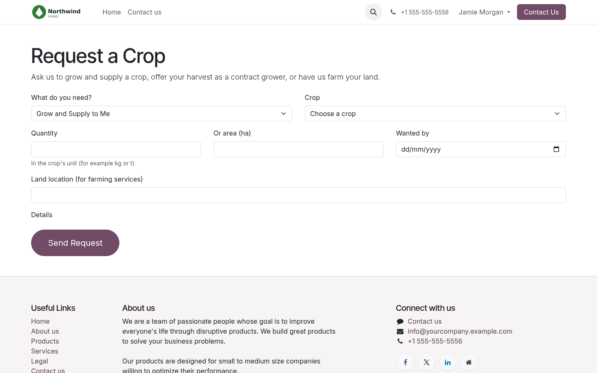
From an empty field to a costed harvest
1 Set up the farm Create the farm with its coordinates and stock location, draw the fields, add crops with their activity template. | 2 Plan and work the season Confirm a crop plan: activities and budget appear. Record work, scouting and weather as they happen. | 3 Harvest, sell and compare Receive the harvest as lots, sell them, and read cost per hectare, yield and margin per field and season. |
Agriculture section in Odoo Settings, for managers
Weather Daily Open-Meteo fetch on or off, forecast days, frost, heavy rain, heat and wind thresholds, GDD base temperature. | Costing and stock Analytic account per crop plan, default labour and machine rates, allow consumption without stock. | Livestock products The milk and egg products received into stock from the production records. |
Ask us anything else by email
Tested on Odoo 19 with automated tests and on a test database
Odoo 19 CommunityOdoo 19 EnterpriseMulti-companyOpenStreetMapOpen-MeteoCustomer portalPDF reports107 automated tests
| EMAIL modvantaapps@gmail.com | AUTHOR Modvanta | INCLUDED Email support from the author |